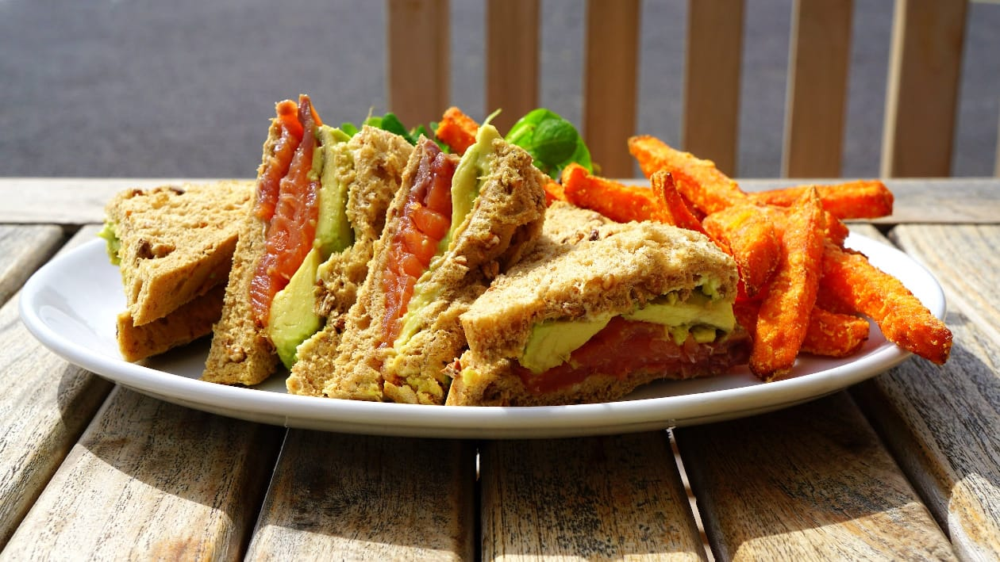
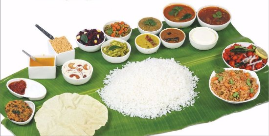

YUMMY
FOODS
WELCOME TO YUMMY FOODS
"The best way to celebrate the holidays is with some delicious food"
Yummy food is a broad term encompassing a wide range of dishes that are considered delicious and enjoyable to eat.Here are some of yummy food from various cuisines:
|
|

|

|
|
| Awesome Taste |
Crispy Item |
Best Ingredient |
Spicy Paasta |
delicious food has an incredible ability to bring joy, evoke cherished memories, and create moments of pure delight. Whether it's the satisfying crunch of a perfectly fried chicken, the lusciousness of a mouthwatering crispy Item, or the comforting warmth of a homemade bowl of pasta, the world of flavors and textures is an extraordinary gift. So let us savor and appreciate the wonders of yummy food,
burger collection
Ah, the burger! A timeless classic that never fails to satisfy.grilled patties nestled between soft, toasted buns, adorned with an array of delicious toppings.
When it comes to toppings for burgers.Cheese,Lettuce,Tomato,Onions,Pickles,Bacon,Sauces,Avocado,Mushrooms,Fried Egg

|

|
|

|
| Burger1 |
Burger2 |
Burger3 |
Burger4 |
"A Burger With Out A Cheese Like A Hug Without A Squeeze"
Fire and Ice With Our Fries
"Keep Calm And Eat French Fries"
Fries are loved for their delicious taste, crispy texture, and their ability to complement a wide range of dishes. Whether enjoyed alongside a juicy burger, as a snack with dipping sauces, or as part of a larger meal, fries are a comfort food favorite that brings joy to many.
|
|
|

|
| Fries1 |
Fries2 |
Fries3 |
"Keep Your Friends Close And Your Fries Closer"
Eat Healthy and Stay Healthy
Healthy food refers to food that provides the necessary nutrients, vitamins, and minerals to support overall well-being and maintain good health.
|
|

|

|
|
| Healthy one |
Healthy two |
Healthy three |
Healthy four |
Enjoy the deserts
"Life Is Like A Glass Of juice.......
......Its All In How You Make it"
fruit juices can be a tasty and refreshing way to enjoy the flavors of various fruits. However, it's always a good idea to read labels, choose juices with minimal additives or added sugars, and consider consuming whole fruits as well to benefit from the fiber content.
Tell me more.

|
|
|

|
| Desert One |
Desert Two |
Desert Three |
Desert Four |
copy right ©: 2024 coding brains
All rights reserved
Developed and maintained by kavyasamunuri